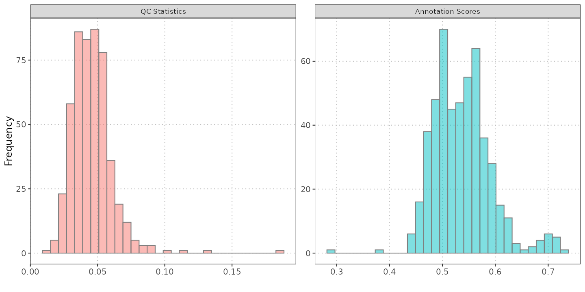
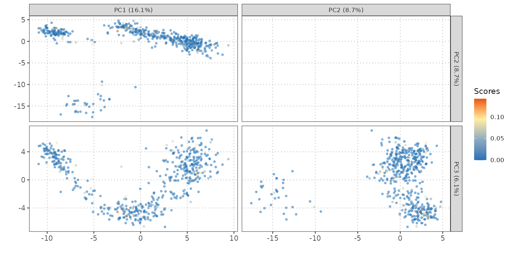

Visualization of QC and Annotation Scores
Anthony Christidis
Core for Computational Biomedicine, Harvard Medical Schoolanthony-alexander_christidis@hms.harvard.edu
Andrew Ghazi
Core for Computational Biomedicine, Harvard Medical SchoolSmriti Chawla
Core for Computational Biomedicine, Harvard Medical SchoolNitesh Turaga
Core for Computational Biomedicine, Harvard Medical SchoolLudwig Geistlinger
Core for Computational Biomedicine, Harvard Medical SchoolRobert Gentleman
Core for Computational Biomedicine, Harvard Medical SchoolSource:
vignettes/QCandAnnotationScores.Rmd
QCandAnnotationScores.RmdIntroduction
In this vignette, we will demonstrate how to use functions for visualizing various aspects of single-cell RNA sequencing data. We will cover:
- Scatter Plot of QC Stats vs Cell Type Annotation Scores
- Histograms of QC Stats and Annotation Scores
- Gene Set Scores on Dimensional Reduction Plots
Datasets
We will use two datasets in this vignette: query_data,
and qc_data. Each dataset has been preprocessed to include
log-normalized counts, specific metadata columns, PCA, t-SNE, and UMAP
results.
Query Data
The query_data is another dataset from HeOrganAtlas, but
it serves as a query set for comparison. It contains:
- Log-Normalized Counts and Metadata: Similar to the reference data.
-
SingleR Annotations: Predictions of cell types
using SingleR, including
SingleR_annotationandannotation_scores. - Gene Set Scores: Scores calculated for gene sets or pathways, providing insights into gene activities across cells.
QC Data
The qc_data originates from the Bunis et al. study
focusing on haematopoietic stem and progenitor cells. This dataset
includes:
- QC Metrics: Metrics such as total library size and mitochondrial gene content.
- SingleR Predictions: Predicted cell types based on SingleR annotations.
- Annotation Scores: Scores reflecting the confidence in cell type predictions.
# Load library
library(scDiagnostics)
# Load datasets
data("qc_data")
data("query_data")
# Set seed for reproducibility
set.seed(0)QC Scores
Scatter Plot: QC Stats vs Cell Type Annotation Scores
The scatter plot visualizes the relationship between QC statistics (e.g., total library size or percentage of mitochondrial genes) and cell type annotation scores. This plot helps in understanding how QC metrics influence or correlate with the predicted cell types.
# Generate scatter plot
p1 <- plotQCvsAnnotation(se_object = qc_data,
cell_type_col = "SingleR_annotation",
qc_col = "total",
score_col = "annotation_scores")
p1 + ggplot2::xlab("Library Size") A scatter plot can reveal patterns such as whether cells with higher
library sizes or mitochondrial content tend to be associated with
specific annotations. For instance, cells with unusually high
mitochondrial content might be identified as low-quality or stressed,
potentially affecting their annotations.
A scatter plot can reveal patterns such as whether cells with higher
library sizes or mitochondrial content tend to be associated with
specific annotations. For instance, cells with unusually high
mitochondrial content might be identified as low-quality or stressed,
potentially affecting their annotations.
Histograms: QC Stats and Annotation Scores Visualization
Histograms provide a distribution view of QC metrics and annotation scores. They help in evaluating the range, central tendency, and spread of these variables across cells.
# Generate histograms
histQCvsAnnotation(se_object = query_data,
cell_type_col = "SingleR_annotation",
qc_col = "percent_mito",
score_col = "annotation_scores") Histograms are useful for assessing the overall distribution of QC metrics and annotation scores. For example, if the majority of cells have high percent_mito, it might indicate that many cells are stressed or dying, which could impact the quality of the data.
Visualization of Gene Sets or Pathway Scores on Dimensional Reduction Plots
Dimensional reduction plots (PCA, t-SNE, UMAP) are used to visualize the relationships between cells in reduced dimensions. Overlaying gene set scores on these plots provides insights into how specific gene activities are distributed across cell clusters.
# Plot gene set scores on PCA
plotGeneSetScores(se_object = query_data,
method = "PCA",
score_col = "gene_set_scores",
pc_subset = 1:5) By visualizing gene set scores on PCA or UMAP plots, one can identify clusters of cells with high or low gene set activities. This can help in understanding the biological relevance of different gene sets or pathways in various cell states or types.
Conclusion
This vignette illustrates how to visualize and interpret QC statistics, cell type annotation scores, and gene set scores using single-cell RNA sequencing data. These visualizations are crucial for assessing data quality, understanding cell type annotations, and exploring gene activities, ultimately aiding in the comprehensive analysis of single-cell datasets.
R Session Info
R version 4.4.0 (2024-04-24 ucrt)
Platform: x86_64-w64-mingw32/x64
Running under: Windows 11 x64 (build 22631)
Matrix products: default
locale:
[1] LC_COLLATE=English_United States.utf8
[2] LC_CTYPE=English_United States.utf8
[3] LC_MONETARY=English_United States.utf8
[4] LC_NUMERIC=C
[5] LC_TIME=English_United States.utf8
time zone: America/New_York
tzcode source: internal
attached base packages:
[1] stats graphics grDevices utils datasets methods base
other attached packages:
[1] scDiagnostics_0.99.6 BiocStyle_2.32.0
loaded via a namespace (and not attached):
[1] SummarizedExperiment_1.34.0 gtable_0.3.5
[3] xfun_0.44 bslib_0.7.0
[5] ggplot2_3.5.1 htmlwidgets_1.6.4
[7] Biobase_2.64.0 lattice_0.22-6
[9] generics_0.1.3 vctrs_0.6.5
[11] tools_4.4.0 stats4_4.4.0
[13] tibble_3.2.1 fansi_1.0.6
[15] highr_0.11 pkgconfig_2.0.3
[17] Matrix_1.7-0 desc_1.4.3
[19] S4Vectors_0.42.0 lifecycle_1.0.4
[21] GenomeInfoDbData_1.2.12 farver_2.1.2
[23] compiler_4.4.0 textshaping_0.4.0
[25] munsell_0.5.1 GenomeInfoDb_1.40.1
[27] htmltools_0.5.8.1 sass_0.4.9
[29] yaml_2.3.8 pkgdown_2.0.9
[31] pillar_1.9.0 crayon_1.5.2
[33] jquerylib_0.1.4 SingleCellExperiment_1.26.0
[35] cachem_1.1.0 DelayedArray_0.30.1
[37] abind_1.4-5 tidyselect_1.2.1
[39] digest_0.6.35 dplyr_1.1.4
[41] purrr_1.0.2 bookdown_0.39
[43] labeling_0.4.3 fastmap_1.2.0
[45] grid_4.4.0 colorspace_2.1-0
[47] cli_3.6.2 SparseArray_1.4.8
[49] magrittr_2.0.3 S4Arrays_1.4.1
[51] utf8_1.2.4 withr_3.0.0
[53] UCSC.utils_1.0.0 scales_1.3.0
[55] rmarkdown_2.27 XVector_0.44.0
[57] httr_1.4.7 matrixStats_1.3.0
[59] ragg_1.3.2 memoise_2.0.1
[61] evaluate_0.23 knitr_1.46
[63] GenomicRanges_1.56.0 IRanges_2.38.0
[65] rlang_1.1.3 glue_1.7.0
[67] BiocManager_1.30.23 BiocGenerics_0.50.0
[69] rstudioapi_0.16.0 jsonlite_1.8.8
[71] R6_2.5.1 MatrixGenerics_1.16.0
[73] systemfonts_1.1.0 fs_1.6.4
[75] zlibbioc_1.50.0